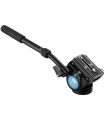

现今的摄影/摄像师们需要小型而质量高的摄像云台来提供顺滑的转动、流畅的倾斜、和无缝的接片。思锐紧凑型VH-10专业液压摄像云台专为这一理念而设计。云台底座的可进行360度顺滑的转动，而且可锁定进行精确拍摄取景。思锐所设计的液压摄像云台倾斜系统（+90/-70°）可让您轻松调节阻尼，无论您是使用重型摄像设备或是轻巧相机系统，都可使您的操作既顺畅又突显专业。云台内置的液压平衡阻尼系统（平衡负重力2kg/4.4lb）可以协助云台在倾斜后返回到中间的位置，即使是在没有预设阻尼的情况下，这一功能也可以使相机保持平衡和减少倾斜可能带来的不稳定问题。增加云台阻尼系数可倾斜运作顺滑。当你把云台底座的水平转动和倾斜角度的阻尼适当调节相结合，在摄像过程中，你有感到非常专业的摄像操作。